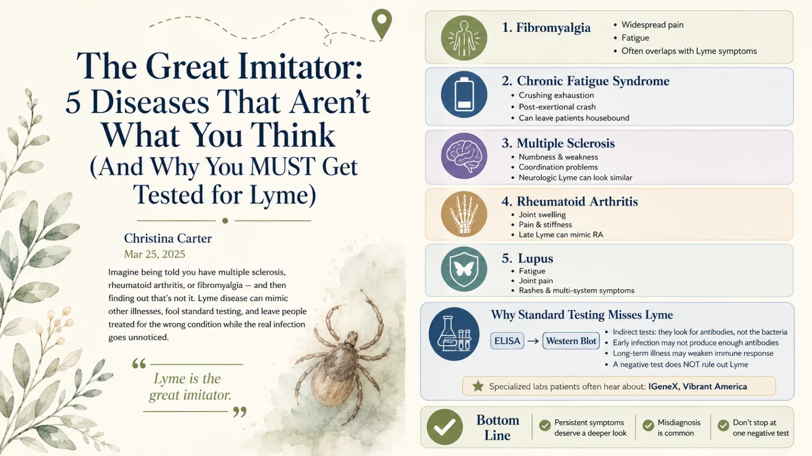

The Great Imitator: 5 Diseases That Aren't What You Think
Imagine being told you have multiple sclerosis. Or rheumatoid arthritis. Or fibromyalgia — and then finding out that's not it. Lyme is the great imitator: it mimics other illnesses, fools standard testing, and leaves people treated for the wrong condition while the real infection goes unnoticed.

Imagine being told you have multiple sclerosis. Or rheumatoid arthritis. Or fibromyalgia. And then finding out that's not it.
You brace yourself for a lifetime of medication, pain management, and adapting to a "new normal." But what if the diagnosis is wrong? What if the real culprit is an infection that's been masquerading as something else all along?
Lyme disease is the great imitator, fooling doctors and patients alike. Every year, thousands of people are misdiagnosed with conditions that look like Lyme but aren't. And the worst part? Traditional testing often misses it — meaning you could be walking around with an undiagnosed, treatable infection while being prescribed drugs for a disease you don't actually have.
Here are the five most common misdiagnoses for Lyme disease, and why you should insist on proper testing — including through specialty labs — if your symptoms don't add up.
Quick answer
Why is Lyme disease called the great imitator?
Lyme is called 'the great imitator' because its wide-ranging symptoms — fatigue, joint and muscle pain, neurological issues, cognitive problems, and multi-system involvement — overlap heavily with many other chronic conditions. This causes it to be frequently misdiagnosed as fibromyalgia, chronic fatigue syndrome, multiple sclerosis, rheumatoid arthritis, or lupus. Standard antibody testing often misses it, so people can be treated for the wrong condition while a treatable infection goes unaddressed.
Key Takeaways
- Lyme is “the great imitator” — it mimics other illnesses and fools standard testing.
- Five common misdiagnoses: MS, rheumatoid arthritis, fibromyalgia, chronic fatigue syndrome, and lupus.
- People get treated for the wrong disease for years while the real infection is missed.
- Accurate testing matters — standard panels miss many cases.
- If your diagnosis just doesn’t fit, Lyme is worth ruling in or out properly.
Fibromyalgia
~2.7% of people globallyFibromyalgia is characterized by widespread musculoskeletal pain, fatigue, and tenderness in localized areas. The overlap with Lyme — joint pain and fatigue especially — often leads to confusion between the two. Fibromyalgia affects roughly 2.7% of the population globally, with a strong female predominance (about 3:1 versus males).1
Chronic Fatigue Syndrome (ME/CFS)
up to 91% undiagnosedAlso known as myalgic encephalomyelitis, CFS is marked by extreme fatigue that doesn't improve with rest and worsens with physical or mental activity — often leaving people house- or bed-bound. In the U.S., it's estimated that up to 91% of people with CFS remain undiagnosed, which shows just how hard this picture is to recognize.2 Lyme's crushing, unrelenting fatigue mimics it closely.
Multiple Sclerosis (MS)
~2.3M affected worldwideMS is an autoimmune disease affecting the central nervous system, causing numbness, weakness, and coordination problems. The neurological manifestations of Lyme — neuropathy, cognitive dysfunction, and more — can mimic those of MS closely. Roughly 2.3 million people are affected by MS worldwide.3 (More on this in my guide to neurological Lyme.)
Rheumatoid Arthritis (RA)
~1.3M U.S. adultsRA is an autoimmune disorder causing joint inflammation, pain, and deformity. The joint pain and swelling of Lyme — particularly in its later stages — can be mistaken for RA. In the U.S., RA affects about 1.3 million adults, with women more commonly affected than men.4
Systemic Lupus Erythematosus (Lupus)
~161,000 in the U.S.Lupus is an autoimmune disease that can affect multiple organ systems, with symptoms like fatigue, joint pain, and skin rashes. The multi-system involvement and nonspecific symptoms of Lyme can closely resemble lupus. In the U.S., SLE is estimated to affect approximately 161,000 individuals.5
Why accurate testing matters
Given these overlaps, relying solely on standard tests can lead to misdiagnosis or delayed diagnosis. If you've been diagnosed with fibromyalgia, chronic fatigue syndrome, MS, rheumatoid arthritis, or lupus, and your symptoms persist despite treatment, it's worth considering comprehensive testing for Lyme. Specialized laboratories such as IGeneX and Vibrant America offer advanced options that may provide more accurate results.
"But I was tested and it was negative!"
Standard Lyme testing uses a two-tiered approach — an ELISA, then a confirmatory Western blot. But these tests have real limits:
- Sensitivity issues. They're indirect tests — they measure your antibody response, not the bacteria itself. In early infection, before your immune response has ramped up, they can simply miss it.
- Timing of antibodies. After infection, IgM and IgG antibodies typically first become detectable around 2–4 and 4–6 weeks respectively, peaking at 6–8 weeks. If an erythema migrans (EM) rash appears early, detectable antibodies may not be present yet — which is why, when a clear EM rash is present, diagnosis should be made clinically rather than waiting on a test.
I go much deeper into all of this — and the specialty labs Lyme-literate doctors trust — in my complete guide to Lyme testing.
The bottom line
Lyme's ability to mimic other conditions is one of the biggest challenges in all of medicine. Awareness of these common misdiagnoses — and the limits of standard testing — matters for patients and providers alike.
If you or someone you love has been diagnosed with fibromyalgia, chronic fatigue syndrome, MS, rheumatoid arthritis, or lupus, and the symptoms persist despite treatment, it's worth getting tested. Consulting a clinician experienced in Lyme, and considering testing through specialized labs, can lead to an accurate diagnosis and the right treatment — and, ultimately, a better outcome.
I lived the misdiagnosis nightmare for ten years. If your gut says something's being missed, I'd be glad to help you think through next steps.
Lyme Misdiagnosis FAQ
Because its wide-ranging symptoms — fatigue, joint and muscle pain, neurological and cognitive issues, multi-system involvement — overlap with many chronic conditions. It's frequently misdiagnosed as fibromyalgia, CFS, MS, RA, or lupus, and standard antibody testing often misses it, so people get treated for the wrong condition while a treatable infection goes unaddressed.
The five most common are fibromyalgia, chronic fatigue syndrome (ME/CFS), multiple sclerosis, rheumatoid arthritis, and lupus — each sharing overlapping symptoms like widespread pain, fatigue, neurological changes, joint inflammation, or multi-system involvement.
Yes. Lyme's neurological symptoms — numbness, weakness, coordination problems, nerve pain, cognitive dysfunction — can closely mimic MS. When an MS picture doesn't fully fit or symptoms persist unexpectedly, comprehensive Lyme testing is worth considering.
If you've been diagnosed with fibromyalgia, CFS, MS, RA, or lupus and aren't improving, comprehensive Lyme testing — ideally via specialty labs and a Lyme-literate clinician — can be worth it. A past negative standard test doesn't rule Lyme out. Make this decision with a qualified professional, and don't stop existing treatment on your own.
References
- Wolfe F, Walitt BT, Katz RS, Lee Y, Michaud KD. "Fibromyalgia and Systemic Lupus Erythematosus (SLE): The Frequency and Impact of Fibromyalgia in Patients with SLE." J Rheumatol. 2013;40(11):1828–1833.
- Jason LA, Mirin AA, Taylor RR. "Examining the Prevalence of Myalgic Encephalomyelitis/Chronic Fatigue Syndrome in U.S. Communities." J Community Health. 2020;45(5):885–890.
- Multiple Sclerosis International Federation. Atlas of MS: Mapping Multiple Sclerosis Around the World.
- Helmick CG, Felson DT, Lawrence RC, et al. "Estimates of the Prevalence of Arthritis and Other Rheumatic Conditions in the United States: Part I." Arthritis Rheum. 2008;58(1):15–25.
- Lim SS, Drenkard C, McCune WJ, et al. "Population-Based Lupus Registries: Advancing Our Epidemiologic Understanding." Arthritis Rheumatol. 2014;66(2):231–238.
Medical disclaimer: This article is for educational purposes only and reflects personal experience and general research. It is not medical advice, diagnosis, or treatment, and it does not replace consultation with a qualified healthcare professional. Prevalence figures are approximate and drawn from the cited sources. Lab names are mentioned for information only and are not endorsements or affiliations. An existing diagnosis may well be correct; do not stop or change any treatment based on this article. Christina Carter is a patient advocate and educator, not a licensed medical provider. Always consult a qualified, Lyme-literate physician about testing and treatment.